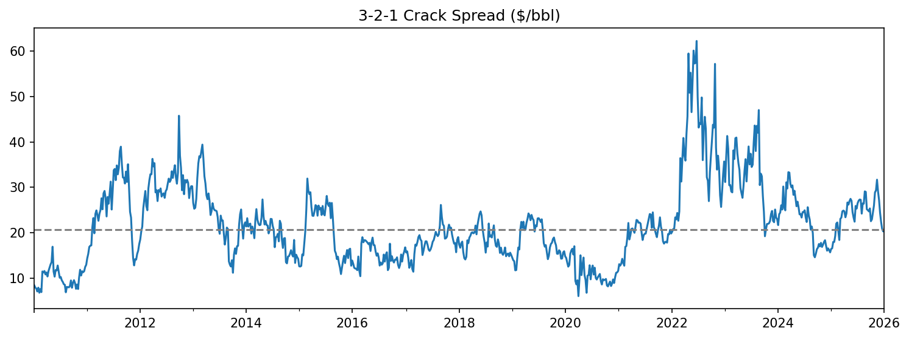
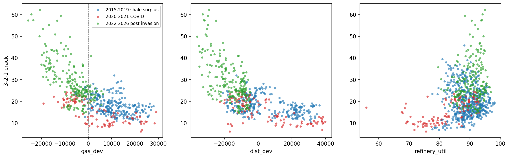
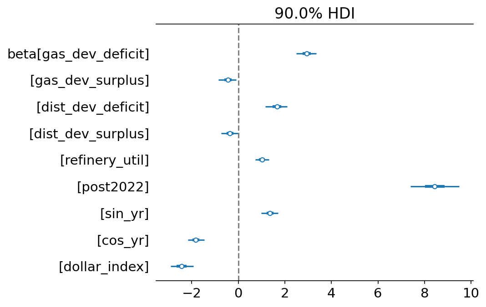
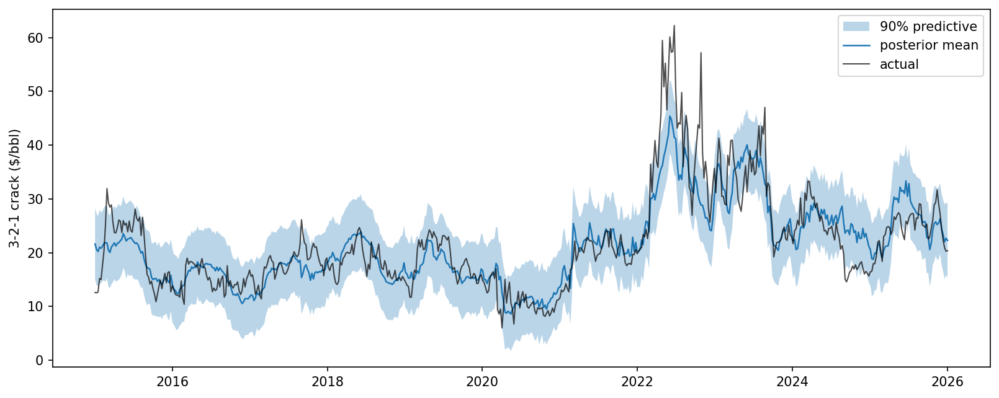
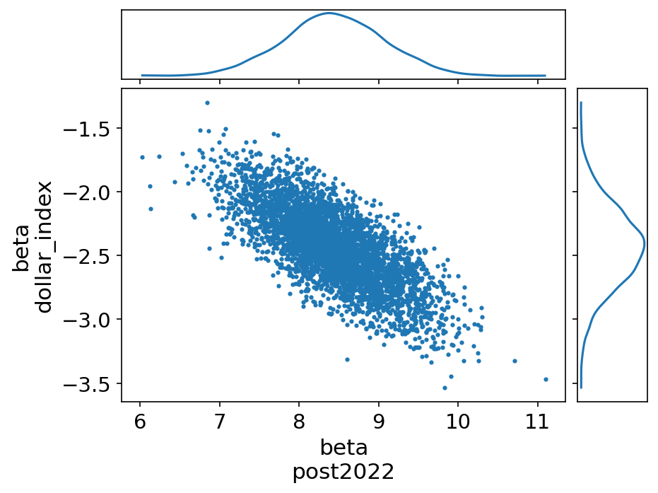

What this is: an exercise in reasoning about what moves refiner margin, with honest uncertainty about how much the data actually supports. It isn't a forecast, it isn't a trading signal, and I'm not claiming any predictive edge.
I modeled the weekly 3-2-1 crack spread, which is the standard proxy for US refining margin, against inventory and utilization fundamentals. Bayesian linear regression with a Student-t likelihood, fit on 575 weeks of data running from 2015 to the end of 2025.
The main result is an asymmetry in how margin responds to product inventories. Push gasoline stocks one standard deviation deeper into deficit and the crack widens by about $2.94/bbl (94% HDI: 2.44 to 3.44). Push them the same distance into surplus and it compresses by roughly $0.44/bbl (−0.88 to 0.01), an interval that only barely clears zero.
That asymmetry held up under a robustness check that shifted several other coefficients by 40% or more, and the plateau is visible in two structurally unrelated surplus episodes: the 2015 to 2019 shale glut and the 2020 to 2021 demand collapse. The fact that both eras agree is what convinced me it's a real relationship rather than an artifact of one period.
The second finding is a limitation rather than a result. The post-2022 regime term and the dollar index turn out not to be separately identified in this sample, with posteriors correlating at −0.74. I report both specifications side by side instead of picking the one I like.
The full script that produces everything on this page is available at the bottom.
The 3-2-1 crack approximates refining economics: three barrels of crude in, two of gasoline and one of distillate out. The spread is the gross margin.
The 42 converts the products, which are quoted in dollars per gallon, onto the per-barrel basis crude is quoted in. Dividing by three expresses margin per barrel of crude run.
I picked the crack over flat crude price on purpose. Weekly flat price is close to a random walk, so a model that "predicts" it from its own lags mostly just learns to output tomorrow ≈ today, and reports a flattering error while doing it. Margin is a different kind of object. It's a relationship between physical quantities with fundamentals you can actually reason about.

Weekly 3-2-1 crack spread, 2015 to 2025. Both the 2020 collapse and the 2022 blowout are clearly visible.
| Source | Series | Frequency |
|---|---|---|
| Yahoo Finance | WTI, RBOB, ULSD front-month futures | daily to weekly |
| EIA Weekly Petroleum Status | crude, gasoline, distillate stocks; refinery utilization | weekly |
| FRED | broad trade-weighted dollar index | daily to weekly |
Everything is aligned to EIA's Friday-ending reporting week. I take the last observation in each week rather than an average, so the prices are values that actually traded.
Raw inventory levels both trend and cycle, so a coefficient on the level ends up picking up the calendar and the decade more than it picks up scarcity.
Since what traders actually watch is the deviation from the seasonal norm, I compute a trailing five-year average for each week of the year. The benchmark for week 30 of 2022 is the mean of week 30 across 2017 to 2021. This de-trends the predictor, matches how the industry actually defines the number, and uses only information available beforehand. The cost is the first five years of the sample, which get eaten by the burn-in window.
I wrote these down before running any model, so the posterior works more as a check. The priors in the model are weakly informative and centred at zero, not at these signs. If I'd centred them here and then reported that the posterior agreed, I wouldn't have learned anything.
| Predictor | Expected sign | Reasoning |
|---|---|---|
| Gasoline deficit | + strong | Scarcity has to be rationed through margin |
| Gasoline surplus | − weak | The marginal barrel just sits in a tank |
| Distillate deficit | + strong | Same mechanism, tighter storage |
| Distillate surplus | − weak | Same mechanism |
| Refinery utilization | + | But endogenous, see limitations |
| Dollar index | ≈ 0 | Both legs are dollar-denominated, so FX should largely cancel in a spread |
| Summer seasonal | + | Driving-season gasoline demand |
| Post-2022 regime | + | Permanent refining capacity closed during 2020 and 2021 |
The output that matters here is a distribution, not a point estimate. A posterior tells me how confident the data lets me be about each relationship, and a coefficient whose credible interval straddles zero gets reported as exactly that: something the data doesn't resolve.
The target has a heavy right tail. Median sits near $20/bbl, but the maximum runs above $62 during the 2022 distillate dislocation. Under a Normal likelihood those points drag the fit around and inflate the residual variance everywhere else. The posterior for the degrees-of-freedom parameter came back at ν ≈ 3.6 (2.41 to 4.81), nowhere near the ~30 where Student-t starts approximating Normal.
The scatter of crack against product deviation is visibly kinked right at the seasonal norm: steep on the deficit side, flat on the surplus side. A quadratic would eventually bend back on itself, which implies something economically false at the extremes and produces a coefficient nobody can interpret out loud. Instead I split each deviation into two non-negative columns, deficit magnitude and surplus magnitude, and let each get its own coefficient. The model stays linear in parameters, and I can still state what every number means in a sentence.
Continuous predictors are standardized, so the coefficients read as dollars per barrel per standard-deviation move. The regime indicator stays 0/1 so its coefficient reads directly in dollars.

Crack against each driver, colour-coded by era. This is the diagnostic that drove the hinge specification.
Full specification, 575 weekly observations, January 2015 through December 2025 Four chains, r-hat of 1.00 on every parameter, ESS in the thousands, zero divergences.
| Predictor | Mean | 94% HDI |
|---|---|---|
| Intercept | 18.34 | 17.85 to 18.80 |
| Gasoline deficit | +2.94 | 2.44 to 3.44 |
| Gasoline surplus | −0.44 | −0.88 to 0.01 |
| Distillate deficit | +1.66 | 1.15 to 2.22 |
| Distillate surplus | −0.35 | −0.80 to 0.07 |
| Refinery utilization | +1.01 | 0.66 to 1.33 |
| Dollar index | −2.44 | −2.96 to −1.81 |
| Post-2022 regime | +8.43 | 7.27 to 9.62 |
| sin (annual) | +1.36 | 0.96 to 1.79 |
| cos (annual) | −1.82 | −2.21 to −1.42 |
| σ / ν | 2.99 / 3.55 | see limitations |
The deficit response is several times larger than the surplus response. I avoid quoting a precise ratio because the surplus interval runs to +0.01, so the denominator nearly touches zero and the ratio is far less certain than the two point estimates suggest. More plainly, the surplus effect is small enough that the data cannot rule out zero, and for distillate the surplus interval spans zero outright. This is the convex inventory response that storage economics predicts. Below the norm there's no buffer left, so scarcity has to get rationed through price. Above it, the extra barrel goes into a tank and changes almost nothing.
The sine and cosine pair implies an annual amplitude of roughly $2.27/bbl, about $4.5 peak to trough, peaking near week 21, which is late May. I never told the model when gasoline demand peaks. It located Memorial Day from the data by itself.
How big it is turns out to be an open question, for reasons covered below, but the sign and the presence of the shift are stable across every specification I ran. The mechanism I'd point to is the permanent refining capacity that closed during 2020 and 2021, combined with the redirection of product trade flows after 2022. Less capacity chasing the same demand means fatter margins at any given inventory level.

Coefficient posteriors with 90% credible intervals

Posterior mean and 90% predictive band against actual
The regime dummy correlates 0.61 with the dollar index in the design matrix, which is high enough to worry about, so I refit the whole thing without the dollar.
| Predictor | Full | No dollar | Change |
|---|---|---|---|
| Gasoline deficit | 2.94 | 3.23 | +10% |
| Gasoline surplus | −0.44 | −0.67 | small |
| Distillate deficit | 1.66 | 1.00 | −40% |
| Distillate surplus | −0.35 | −0.54 | small |
| Refinery utilization | 1.01 | 1.60 | +58% |
| Post-2022 regime | 8.43 | 4.60 | −45% |
| sin / cos | 1.36 / −1.82 | 1.49 / −1.84 | ~0% |
Dropping one predictor moved two others by 40% and 58%. So the collinearity isn't confined to the dollar and regime pair. Several predictors sit on a ridge where the sampler can trade magnitude back and forth between them without changing the fit much.
You can see the ridge directly in the joint posterior of the two terms, which correlate at −0.74. The data constrains the sum of the regime and dollar effects perfectly well, it just can't tell me how to split it.

Joint posterior of the regime and dollar coefficients, ρ = −0.74
A third fit, restricted to 2020 through end of 2025 (315 weeks), drops the shale-era surplus data. Along with it goes any ability to estimate the asymmetry at all.
| Predictor | Full (2015 to end of 2025) | Short (2020 to end of 2025) |
|---|---|---|
| Gasoline surplus | −0.44 (−0.88 to 0.01) | +0.47 (−0.24 to 1.11) |
| Distillate surplus | −0.35 (−0.80 to 0.07) | −0.06 (−0.79 to 0.68) |
| Gasoline deficit | +2.94 | +3.57 |
| Post-2022 regime | +8.43 | +11.54 |
| ρ(regime, dollar) | −0.74 | −0.81 |
On the short window the gasoline surplus coefficient flips sign and its interval spans zero. That's the confounding problem in its original form: when every surplus observation is also a COVID observation, "surplus flattens the response" and "2020 and 2021 were different" are the same hypothesis, and no amount of sampling separates them. The deficit side has variation throughout, so it stays stable.
My first specification included crude stock deviations. Colour-coding the scatter by year showed a literal gap in the middle of the variable's range, and a physical quantity doesn't have a hole in it. US crude inventories trend hard across this sample thanks to the shale build and then the SPR drawdown, so a lagging seasonal benchmark made entire eras read as permanent deficit or permanent surplus. The variable had turned into an era indicator. I dropped it. It also has weak economic footing here anyway, since the 3-2-1 crack already differences crude price out.
Computing each week-of-year's benchmark from the entire sample let later years inform earlier ones. Over a 16-year window containing two structural shifts in storage levels, that distorted every deviation I had. Switching to the trailing five-year window fixed it.
In my first sample, which started in 2019, every surplus observation was also a COVID observation. Same rows. So "surplus flattens the response" and "2020 and 2021 were a different world" made identical predictions, and nothing I could run on that sample would separate them. Extending back to 2010 brought in the 2015 to 2019 shale glut as an independent surplus regime, and the plateau shows up in both.
I expected roughly nothing, on the logic that FX should largely cancel in a spread between two dollar-denominated legs. The posterior came back at −2.44, the second-largest effect in the model. After testing it, I and found it entangled with the regime term at ρ = −0.74. So the honest conclusion isn't that the dollar matters more than I thought, it's that this sample can't tell me either way.
Weekly cracks are highly persistent and the residuals inherit that. It doesn't bias the coefficients, but it does mean the credible intervals above are narrower than they ought to be, because there's less independent information here than 575 rows suggests. An AR(1) error structure would handle this and it's the obvious next extension.
Refiners run harder because margins are good. So the utilization coefficient is co-movement, not a lever, and it shouldn't be read causally.
I picked the regime date (1 March 2022) off the invasion and sanctions timeline rather than estimating it.
The 90% predictive interval covers 88.7% of observations, which is close to nominal. But that's in-sample, so it's a weak check. It doesn't validate the model, and I'd rather say so than let the number do work it hasn't earned.
At 3.55 in the full model and 2.78 in the reduced one, the fitted Student-t is close to the point where variance stops existing. The model is leaning very hard on heavy tails to accommodate 2022, which reads to me as the linear structure failing to explain that period.
This is a linear model of a nonlinear system, fit on eleven years that contain two structural breaks. It would fail on a refinery outage, a supply shock, or any regime it hasn't seen. Correlation in this case is evidence about structure.
One script handles the whole pipeline: pulling and aligning the data, constructing the crack, building the features, fitting both specifications, and producing every figure on this page.
Running it needs an EIA API key, which is free and instant from eia.gov/opendata. Dependencies are pandas, numpy, matplotlib, statsmodels, yfinance, pandas-datareader, requests, pymc, arviz, and numpyro.
One note if you run this on macOS(At least for me). PyTensor passes a linker flag that Xcode 15 and later removed, so the C backend fails to compile. The script disables it and samples through NumPyro instead, which sidesteps the problem and is faster anyway.
Download the Python Script